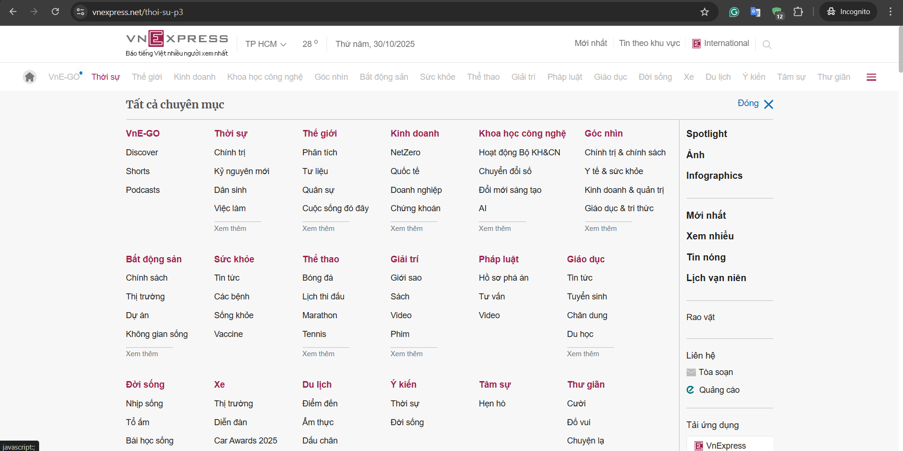
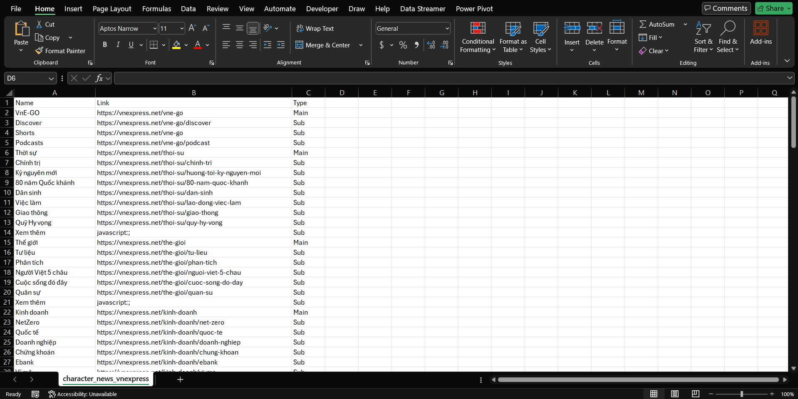

VnExpress News Scraper
Website gốc:

Giao diện trang tin tức VnExpress với các chuyên mục
Mã nguồn Python:
from selenium import webdriver
from bs4 import BeautifulSoup
import pandas as pd
import time
url = "https://vnexpress.net/"
# Cấu hình Chrome options
options = webdriver.ChromeOptions()
options.add_argument("--disable-gpu")
options.add_argument("--window-size=700,800")
options.add_argument("user-agent=Mozilla/5.0 (Windows NT 10.0; Win64; x64) AppleWebKit/537.36")
driver = webdriver.Chrome(options=options)
driver.get(url)
time.sleep(3)
html = driver.page_source
driver.quit()
# Parse HTML với BeautifulSoup
soup = BeautifulSoup(html, 'lxml')
character_news = soup.find('div', class_='row-menu')
data = []
if character_news:
cat_menus = character_news.find_all('ul', class_='cat-menu')
for menu in cat_menus:
first_li = menu.find('li')
if first_li:
main_link = first_li.find('a')
if main_link:
main_name = main_link.get_text(strip=True)
main_href = main_link.get('href', '')
data.append({"Name": main_name, "Link": main_href, "Type": "Main"})
# Các mục con
for li in menu.find_all('li')[1:]:
sub_link = li.find('a')
if sub_link:
sub_name = sub_link.get_text(strip=True)
sub_href = sub_link.get('href', '')
data.append({"Name": sub_name, "Link": sub_href, "Type": "Sub"})
# Lưu dữ liệu ra CSV
df = pd.DataFrame(data)
df.to_csv("character_news_vnexpress.csv", index=False, encoding='utf-8-sig')Kết quả thu được:

Dữ liệu được trích xuất và lưu vào file CSV/Excel với các cột: Name, Link, Type
Công nghệ sử dụng:
Kỹ năng chính
Python Programming
Selenium, BeautifulSoup, Pandas, Requests
Web Scraping
Data extraction, Browser automation, API integration
Data Processing
CSV, Excel, JSON, Data cleaning & transformation
Wireshark
Network protocol analysis, Packet capturing, Traffic inspection